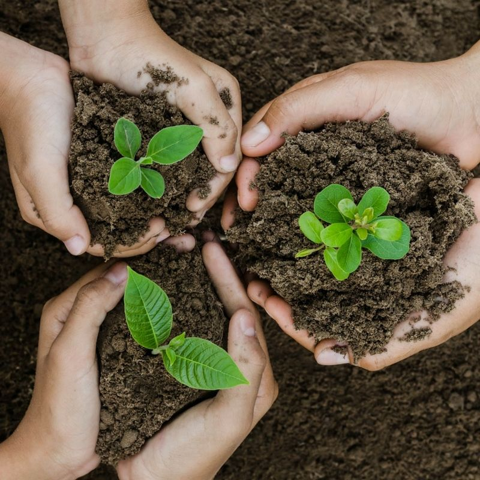

WEBSITE BY
GROUP 4A OF
9PIGNATELLI


BIBLIOGRAPHY
Background and Significance of the Problem
Through this experiment, we compare the efficiency of eggshells and potato peelings as a form of compost for the Spring Onion seedlings. Potato peels are a great source of vitamins, potassium, magnesium, phosphorus, and other minerals. Eggshells contain more than 90% calcium carbonate (Deborah Green, 2022), which are the crucial nutrients that plants need.
The values of composting are to lessen the accumulation of trash and improve soil so they can improve the vegetation in the community. Methane, a potent greenhouse gas, is produced by organic waste in landfills. Making use of compost fertilizers is also beneficial to the environment since it doesn't make use of chemicals.
Statement of the Problem & Hypothesis
Which form of compost (eggshells or vegetable peelings) improves the height of spring onion seedlings and produces more onion leaves?
If spring onion seedlings are fertilized with vegetable peelings, then spring onion seedlings with vegetable peelings will grow taller and produce more onion leaves.
Review of Related Literature
Plant
The particular plant on which our team will concentrate is the spring onion, also known as the scallion. Growth will be significantly suppressed and hampered by the lack of nitrogen. For the formation and development of roots, phosphorus is thought to be vital. For the transfer of sugars and the synthesis of starch, plants require potassium. These are crucial nutrients because, first and foremost, nitrogen serves as the building block for plant proteins.
Compost
More than 90% of calcium carbonate can be found in eggshells, which helps the plant's roots grow stronger and more quickly (Green, 2022). It can be added into the soil before planting, or add them to a compost heap. Eggshells should always be crushed before being added to your compost (Goldin, 2021).
Peels are not only a rich source of essential vitamins and minerals but also a great source of prebiotics. Peels contain the majority of the prebiotic fiber in plants. Potato peels are a good source of vitamins, potassium, magnesium, phosphorus, and other minerals (Manoj, 2022).
Methodology
Variables & Set Ups
Independant Variable
Dependant Variable/s
Constant or Controlled Variables
- Potato Peelings
- Eggshells
- Height of Spring Onion Stem
- No. of Onion Leaves
- Amount of water
- Type of soil
- Amount of sunlight
- Location of the plant
- Type of plant
Control Set up
Experiment Set up 1
Experiment Set up 2
In this set up, we won't be adding any of the 2 sources of compost in order to observe how much of a difference the independant variables made to the test plant. The plant will be placed under direct sunlight and watered every other day at morning and late afternoon with 250ml of water.
In this set up, we will add 50 grams of eggshells on our Spring Onion seedlings. The plant will be placed under direct sunlight and watered every other day at morning and late afternoon with 250ml of water.
In this set up, we will add 50 grams of potato peelings on our test plant. The plant will be placed under direct sunlight and watered every other day at morning and late afternoon with 250ml of water.
Prepare the required materials.
Plant the 6 seeds into 1-3 inch furrows.
Apply 50 grams of eggshells on the soil.
Apply 50 grams of potato peelings on the soil.
Anticipate for results.
This is Eucille Estrada, one of the designers for this webpage specifically. She is 15 years old , likes to watch Kdramas and loves Kpop. She serves as the hardworking and diligent leader for group 4A and has coordinated her group through the 1st and 2nd quarter. She is enthusiastic and shows kindness to the people around her. Other hobbies she partakes in include reading webtoons , listening to music , and eating adobo.